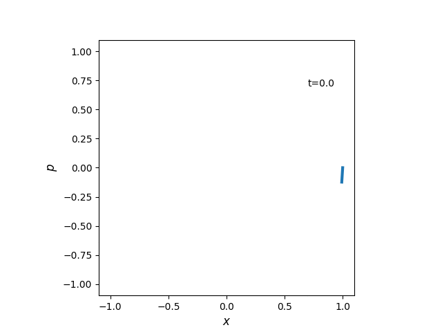
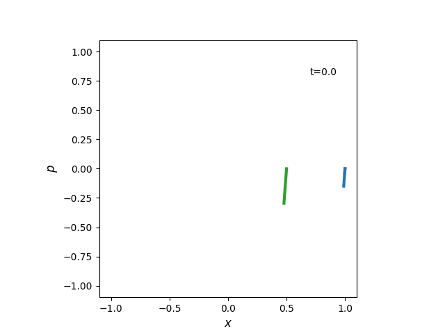

Undergraduate
Harmonic motion - Lecture given at Akita International University (Dec. 2019)The animated phase plots included in this presentation can also be viewed, please see examples below:
|  |  | |
Postgraduate
Matlab Skill Pill - Lecture given at the Okinawa Institute of Science and Technology (Oct. 2017)Outreach
Waves presentation - Lecture given as part of Newcastle's 'Enrichment week 2016' to final year high school studentsThe interactive wave interference activity on slide 14 can be found here